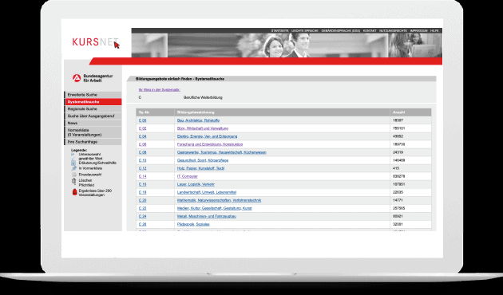
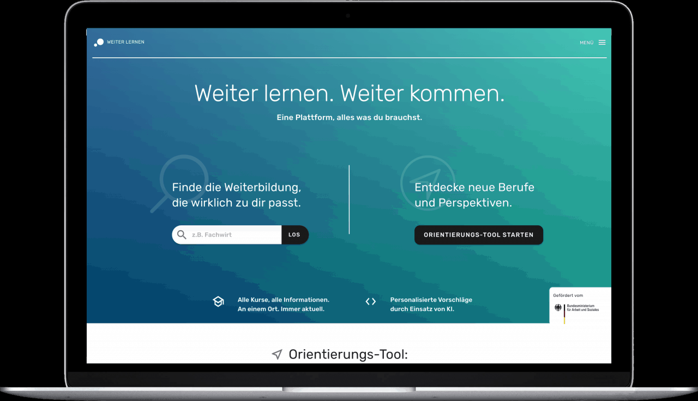
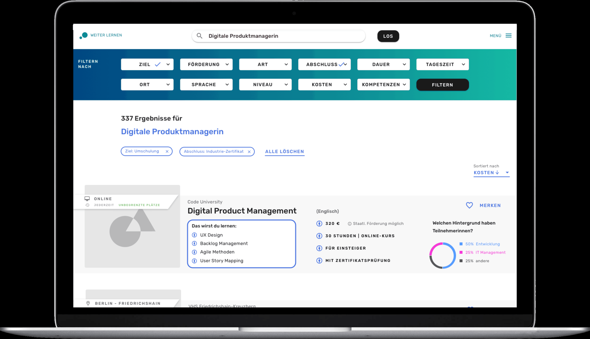
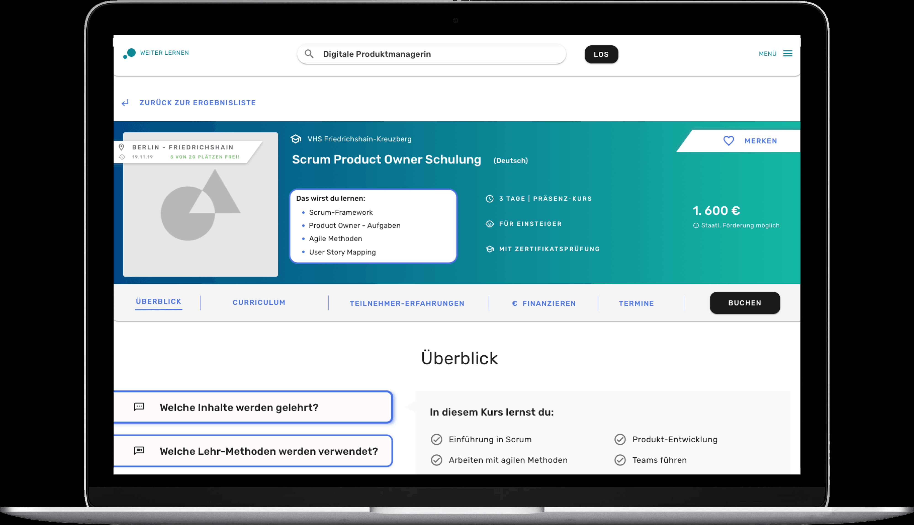
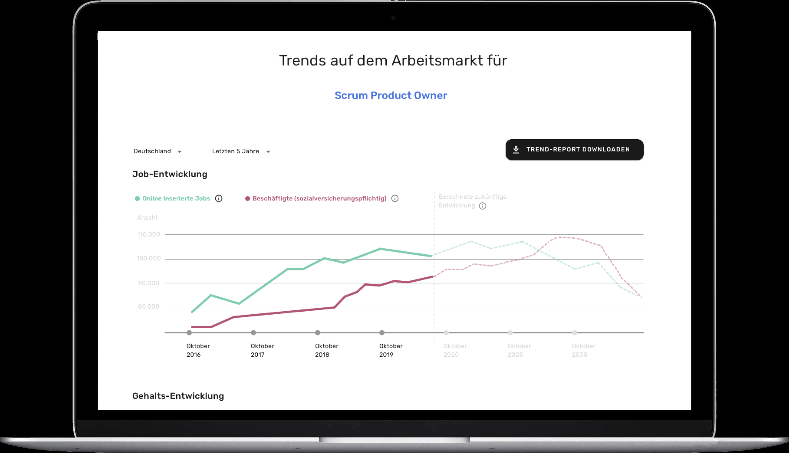

Projekt Weiterbildungsportal BMAS 2019
Projekt Weiter Lernen
In diesem Projekt haben wir uns im Sinne der nationalen Weiterbildungsstrategie mit der Herausforderung beschäftigt, wie Menschen in Deutschland die für sie richtige Weiterbildung finden können. Entstanden ist eine zentrale Plattform, die die wichtigsten User Needs abdeckt.
Case Study
Herausforderung

Die nationale Weiterbildungsstrategie legt eine Plattform zum Thema Weiterbildung fest, die Menschen in Deutschland befähigen soll, richtige und mehr Weiterbildungsangebote in Anspruch zu nehmen.
Zielsetzung
Wir helfen Menschen durch das Labyrinth der Weiterbildungssuche, indem wir alle Informationen zu Weiterbildung auf einer Plattform zusammenbringen und eine spielerische Möglichkeit zur Orientierung anbieten. Mit unserer Plattform ermöglichen wir ein „Lebenslanges Lernen“.
Spielerische Orientierung im Weiterbildungs-Labyrinth durch Machine Learning.
Finden der richtigen Weiterbildung durch erhöhte Informationstransparenz
Finanzieren der Weiterbildung dank des integrierten Förder-Rechners
Galerie
   
Unsere Ergebnisse sind frei verfügbar
Dokumentation
Gesamtkonzept einer Einstiegsplattform für Weiterbildungsangebote.
Download
Technischer Prototyp
Prototyp eines Orientierungstools, das spielerisch Berufsfelder und passende Weiterbildungsangebote aufzeigt.
Link
Source-Code
Übergabe des Source-Codes für das Machine-Learning gestützte Orientierungstool für Weiterbildungsangebote
Link
Projektteam
Natalie Bosch \ Product Fellow
Pablo Abbis \ Product Fellow
Manuel Lang \ Engineering Fellow
Florian Zechmeister \ Engineering Fellow
Projektpartner
BMAS
Michael Schulze \ Digitallotse
Julia Borggräfe \ Projektleiterin